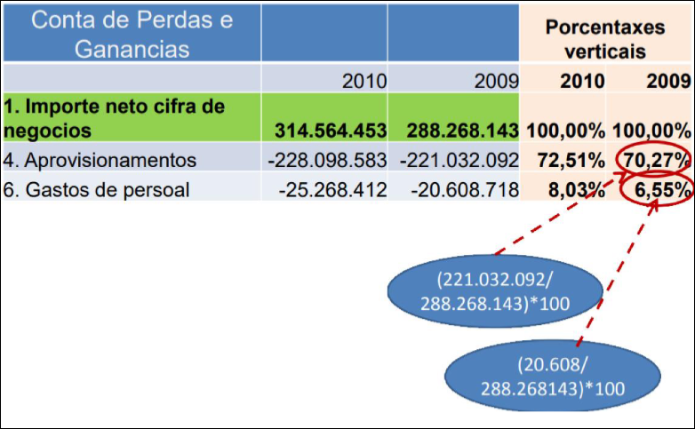
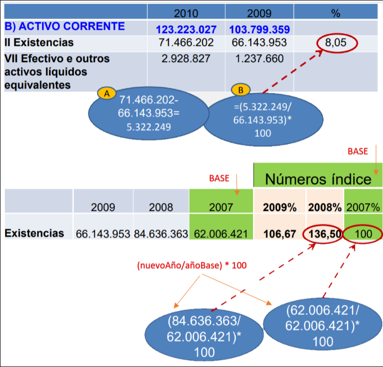

Interpretación y Análisis de la información financiera
Nota
Lo importante de este tema es teoría para el test
Saber hacer un balance Una cuenta de pérdidas y ganancias Saberse todos los ratios
4.1 Análisis de Estados Financieros
El análisis de estados financieros es un conjunto de herramientas y métodos que permiten extraer información relevante sobre la situación económica de una empresa. Estos datos ayudan a la toma de decisiones de diferentes interesados, como acreedores, inversores, gerentes y empleados.
Este conjunto de herramientas también se conoce como cuadro de mando.
Objetivo del análisis
El principal objetivo es diagnosticar la situación financiera de la empresa, evaluando su estabilidad, eficiencia y rendimiento en función de diversos criterios.
Áreas clave del análisis
- Solvencia: Evalúa si la empresa tiene la capacidad de pagar sus deudas.
- Rentabilidad: Mide qué tan eficiente es la empresa en la generación de beneficios.
Técnicas de análisis
Para evaluar la situación financiera, se utilizan distintas técnicas, entre ellas:
- Comparación de valores absolutos: Examina las diferencias en cifras concretas de un periodo a otro.
- Porcentajes verticales: Analiza la proporción de cada partida dentro de un estado financiero.
- Análisis de tendencias: Estudia la evolución de los datos a lo largo del tiempo.
- Ratios financieros: Calcula indicadores clave para medir la salud financiera de la empresa.
4.2 Análisis mediante Porcentajes
El análisis de porcentajes permite entender la estructura y evolución de los estados financieros. Se divide en dos tipos:
1. Porcentajes Verticales
Consiste en expresar cada partida de un estado financiero en relación con una variable clave dentro del mismo documento.
Nota
Un estado financiero es un documento contable oficial que muestra la situación económica y financiera de una empresa en un momento determinado (como el 31 de diciembre) o durante un periodo (por ejemplo, todo el año 2024). Los más importantes son:
- Balance general (ou "balance de situación")
👉 Muestra lo que la empresa posee (activos), lo que debe (pasivos) y su patrimonio neto (lo que le pertenece realmente). - Cuenta de pérdidas y ganancias (ou "cuenta de resultados")
👉 Indica si la empresa ha tenido beneficios o pérdidas durante un periodo, mostrando ingresos y gastos. - Estado de cambios en el patrimonio neto
👉 Refleja cómo ha cambiado el patrimonio neto por beneficios, aportaciones, dividendos, etc. - Estado de flujos de efectivo
👉 Informa sobre los movimientos de dinero (entradas y salidas de efectivo).
Ejemplos
- En el balance general: Se calcula cuánto representa el activo corriente y el activo a largo plazo sobre el total de activos.
- En la cuenta de pérdidas y ganancias: Se mide cuánto representa el costo de materias primas en relación con las ventas totales.

### 2. Porcentajes Horizontales El análisis de **porcentajes horizontales** permite evaluar la evolución de diferentes partidas financieras a lo largo del tiempo. Se calcula el **porcentaje de variación** entre dos periodos para identificar tendencias y patrones de crecimiento o disminución.Si las ventas en el año 2023 fueron de 100,000€ y en 2024 aumentaron a 120,000€, la variación se calcularía así:
Este tipo de análisis ayuda a detectar tendencias de crecimiento, estabilidad o declive en los distintos indicadores financieros..

4.3 Ratios Financieros
Los ratios financieros son indicadores que se obtienen al comparar dos magnitudes relacionadas dentro de los estados financieros. Estos permiten evaluar diferentes aspectos del desempeño financiero de una empresa.
Características de los ratios financieros:
- Son cocientes entre dos magnitudes con un significado relevante.
- Pueden combinar datos de uno o varios estados financieros.
- No existe una lista oficial ni una única definición estándar para cada ratio.
- Su interpretación depende del sector de la empresa, la naturaleza de sus operaciones, su tamaño y los criterios contables utilizados.
Ejemplos de ratios comunes:
- Ratio de liquidez: mide la capacidad de la empresa para pagar sus deudas a corto plazo.
- Ratio de rentabilidad: evalúa qué tan eficiente es la empresa en la generación de beneficios.
- Ratio de endeudamiento: indica el nivel de deuda en relación con los recursos propios.
4.4 Equilibrio Financiero
El equilibrio financiero es la capacidad de una empresa para cumplir con sus pagos en los plazos establecidos. Este equilibrio está estrechamente ligado a los ciclos financieros de la empresa, que pueden dividirse en:
- Ciclo corto: Se refiere a los elementos patrimoniales corrientes. Incluye todas las actividades desde la inversión de capital en el proceso productivo hasta la recuperación de ese capital mediante las ventas.
- Ciclo largo: Se relaciona con los elementos patrimoniales no corrientes. Incluye la adquisición de activos fijos (como maquinaria o inmuebles), los cuales permanecen en la empresa por varios años y se amortizan gradualmente.
Para mantener un equilibrio financiero adecuado, debe existir una correspondencia de plazos entre la estructura económica (activo) y la estructura financiera (pasivo + patrimonio neto):
- El ciclo largo debe financiarse con fondos a largo plazo.
- El ciclo corto debe financiarse con recursos a corto plazo.
4.4.1 Equilibrio Financiero a Corto Plazo: Fondo de Rotación
Dado que el activo corriente (dinero en caja, inventarios, cuentas por cobrar) no siempre se convierte en liquidez de inmediato, puede haber un retraso en el pago de las deudas a corto plazo (pasivo corriente).
Por esta razón, parte del activo corriente debe financiarse con fondos a largo plazo. Esta diferencia se denomina fondo de rotación, y representa una margen de seguridad financiera.
Fórmulas del fondo de rotación:
- Fondo de rotación = Activo corriente – Pasivo corriente
- Fondo de rotación = Patrimonio neto + Pasivo no corriente – Activo no corriente
Si el fondo de rotación es positivo, la empresa tiene estabilidad financiera. Si es negativo, podría enfrentar problemas de liquidez.
Situaciones Patrimoniales según el Fondo de Rotación
| Situación | Descripción |
|---|---|
| Estabilidad máxima | No hay deudas. Todo el activo es financiado con recursos propios. |
| Situación normal | Parte del activo corriente está financiado con fuentes a largo plazo (FR > 0). |
| Inestabilidad | Parte del activo no corriente se financia con pasivos a corto plazo (FR < 0). |
| Quiebra técnica | El pasivo exigible es mayor que el activo. El patrimonio neto es negativo. |
| Inestabilidad máxima | No hay fondos propios y parte del activo corriente se financia con deuda a corto plazo (FR < 0). |
4.4.2 Fondo de Rotación y Período Medio de Maduración (PMM)
El fondo de rotación también depende del período medio de maduración (PMM), que es el tiempo promedio entre la compra de materias primas y el cobro de la venta del producto final.
El PMM se divide en:
- Plazo de pago a proveedores: Tiempo entre la compra y el pago de materias primas.
- Plazo de fabricación: Duración del proceso productivo.
- Plazo de venta: Tiempo que tarda la empresa en vender sus productos.
- Plazo de cobro a clientes: Tiempo que tardan los clientes en pagar.
La empresa debe gestionar estos plazos para evitar problemas de liquidez.
4.4.3 Análisis del Equilibrio Financiero mediante Ratios
Los ratios financieros permiten evaluar la estabilidad y solvencia de la empresa a corto plazo.
1. Ratio de Circulante o Solvencia a Corto Plazo
- Mide la capacidad de la empresa para pagar sus deudas a corto plazo.
- Un valor mayor a 1 indica que la empresa tiene suficiente activo corriente para cubrir sus pasivos corrientes.
Ejemplo:
- Empresa X:
- Fondo de rotación = 10,000 - 5,000 = 5,000
- Ratio de solvencia = 2
- Empresa Y:
- Fondo de rotación = 1,000 - 250 = 750
- Ratio de solvencia = 4
Limitaciones:
- Es un ratio estático (no muestra tendencias).
- Puede ser alterado con ajustes contables ("maquillaje contable").
2. Ratio de Acidez o Prueba Ácida
- Evalúa la capacidad de la empresa para pagar sus deudas a corto plazo sin depender de la venta de inventarios.
- También se expresa como:
- Un valor alto indica mayor liquidez, pero si es demasiado alto, puede significar que la empresa no está aprovechando eficientemente sus recursos.
3. Ratio de Disponibilidad o Tesorería Inmediata
- Mide la capacidad de la empresa para cubrir sus deudas a corto plazo con sus recursos líquidos (bancos, caja e inversiones a corto plazo).
- Un ratio muy alto puede indicar que la empresa no está invirtiendo eficientemente su dinero.
4. Ratio de Endeudamiento
- Relaciona los recursos ajenos con los recursos propios de la empresa.
- Un ratio alto indica mayor dependencia de la deuda y, por lo tanto, un mayor riesgo financiero.
División por plazos:
- Endeudamiento a corto plazo:
- Endeudamiento a largo plazo:
Algunos manuales calculan este ratio dividiendo la deuda entre el total de pasivo y patrimonio.
5. Ratio de Garantía o Ratio de Deuda
- Mide qué tan lejos está la empresa de la quiebra.
- Un ratio mayor a 1 indica que el activo es suficiente para cubrir todas las deudas.